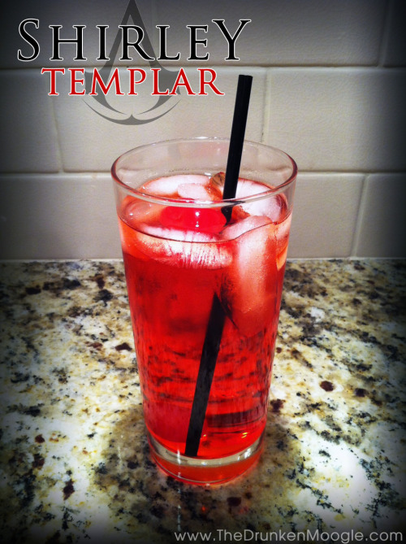

Shirley Templar

Shirley Templar (Assassin's Creed cocktail)
Patron: “Shirley Templar? What’s in it?”
Desmond: “The usual, I just add some gin.”
A Shirley Temple is traditionally a non-alcoholic drink. In Assassin’s Creed: Revelations, it is revealed that Desmond makes his own alcoholic version of the drink, dubbed a Shirley Templar, by adding gin.
Ingredients
- Ginger Ale
- Sprite
- 1.5 oz. gin
- 1.5 oz. grenadine
- 1 maraschino cherry
Steps
- In a glass with ice, fill half with Sprite
- Fill half with ginger ale, leaving a bit of room at the top
- Mix in a shot of grenadine
- Mix in a shot of gin
- Place a maraschino cherry on top and serve